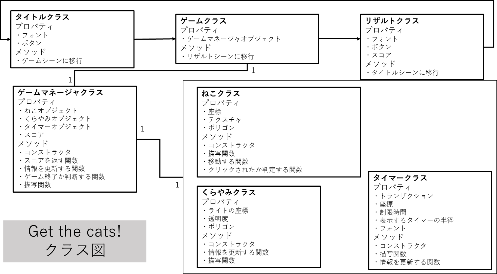

OpenSiv3Dを用いた簡単なゲームの作成
2021/02/24
電気工学研究会活動の一環として、パソコンで遊べるゲームを作成しました。慣れないプログラミングの練習も兼ねています。
計画
C++しか触ったことがないため、それを使ってゲームを作る。C++でちょっとしたゲームを作るのには OpenSiv3D というライブラリが便利だ。ねこはかわいい。ねこを登場させよう。
以上が事前に立てた計画（怪文書）です。しかしこれだとどういうゲームなのか決まっていません。計画というより感想です。そこで OpenSiv3D のチュートリアルにある種々の要素から作れそうなゲームを考案しました。その名を、”GET THE CATS!”。ねこを捕まえろ！という文章を DeepL に入力した結果となっています。
制限時間内にライトを使って暗闇を照らし、できるだけ多くのねこを見つけ出す、そういう感じのゲームです。
さて、ゲームの仕様が（自分の脳内で）固まったあとは、コードを書いていく準備をします。というのも私はかなりプログラミングが苦手なようで、初めにきちんとした見通しを立てておかないと、コードがぐちゃぐちゃになり、完成する前に挫折してしまうということが広く知られています。そこでクラス図もどき、シーケンス図もどきを作成し、それに沿ってプログラミングしていこうというのです。以下に示すのはクラス図もどきです。シーケンス図もどきはフリーハンドでルーズリーフにごちゃごちゃ書いてしまったのでここには載せません。
プログラミング
準備が出来たらいざ、プログラミングです。あまり性能の良いパソコンを使っていないこともあり visual studio を実行することで狂ったように回転するファンの音を聞きながら、ローマ字をポチポチ入力していきます。
上記のクラス図もどきにあるように、”GET THE CATS!”はタイトルシーン、ゲームシーン、リザルトシーンから成ります。名前から大体の意味は分かると思いますが、タイトルシーンはタイトル画面のことです。ゲームをスタートするためのボタンさえあればひとまず問題ないでしょう。ゲームシーンはこのプロジェクトの肝です。立てた計画通りに実装するよう頑張ります（頑張っても無理そうなら計画をもっと簡単にします）。リザルトシーンはゲームのリザルトを表示します。何匹のねこを見つけられたか、数字を表示します。加えて、タイトルシーンに戻るためのボタンがあればオッケーです。
まずはゲームシーンの実装の前に、暫定のタイトルシーンとリザルトシーンを用意しましょう。
OpenSiv3Dの開発者の方が用意してくださっているゲーム用テンプレートをいじり、プロトタイプのタイトルシーンとリザルトシーンを実装しました。配色が恐ろしいことになっていますが、問題ありません。あとで直します。こまごましたところは後から変えたくなることが多いので今は気にせず本筋のところだけ実装するのがいいと思います。
さて、いよいよゲームシーンの実装を行います。
これをこうして……
こうして……
こうして……
こうだ！
はい、できました。以上で”GET THE CATS!”の90%は完了といっても過言ではないです。特にテストも行わないので、バグもありません（見つけようとしないだけ）。ここからデザインその他もろもろを整えます。センスの見せ所です（センスがあるとは言っていない）。
結果
できたゲームの動画を以下に載せておきます。またコードはこのサイトに載せてあります。またここからダウンロードできます。
今回のプロジェクトはとても簡単に完了しました。OpenSiv3Dは初心者にも優しいライブラリでチュートリアルやその他諸々が充実しており特に困ることもなかったです。学校の授業で、プログラムを作成するという課題が出た時にもお世話になりました。
最後に
電気工学研究会は常に理科大野田キャンパス生の新入部員を募集しています。初心者大歓迎です。私もほとんど初心者です。少しでも興味がある人がいたら気軽にご連絡ください。TwitterにDMくれると早めに気づくことが出来ると思います。